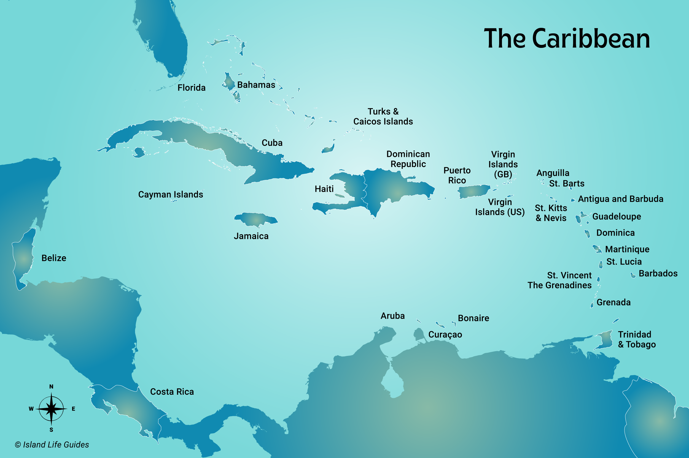

The Caribbean (also known as the West Indies) is a region of the Americas consisting of the Caribbean Sea, its islands, and the surrounding coasts. The region is located southeast of North America, east of Central America, and to the northwest of South America. The islands of the Caribbean are sorted into three main island groups, The Bahamas, the Greater Antilles and the Lesser Antilles. Situated largely on the Caribbean Plate, the area comprises more than seven thousand islands, islets, reefs, and cayes. Geopolitically, the West Indies is usually regarded as a sub-region of North America and is organized into 28 territories including sovereign states, overseas departments, and dependencies.
Physiographically, the Caribbean region is mainly a chain of islands surrounding the Caribbean Sea. To the north, the region is bordered by the Gulf of Mexico, the Straits of Florida and the Northern Atlantic Ocean, which lies to the east and northeast. To the south lies the coastline of the continent of South America.
